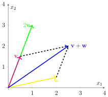

Vector Spaces
Contents
Vector Spaces#
Definition 1
A vector space over the real numbers is a set of vectors \(\mathcal{V}\) with two operations \(+\) and \(\cdot\) such that the following properties hold:
Addition: for \(\vvec{v},\vvec{w}\) we have \(\vvec{v}+\vvec{w}\in\mathcal{V}\). The set of vectors with the addition \((\mathcal{V},+)\) is an abelian group.
Scalar multiplication: for \(\alpha\in\mathbb{R}\) and \(\vvec{v}\in\mathcal{V}\), we have \(\alpha\vvec{v}\in\mathcal{V}\) such that the following properties hold:
\(\alpha(\beta\vvec{v}) = (\alpha\beta) \vvec{v}\) for \(\alpha,\beta\in\mathbb{R}\) and \(\vvec{v}\in\mathcal{V}\)
\(1\vvec{v}=\vvec{v}\) for \(\vvec{v}\in\mathcal{V}\)
Distributivity: the following properties hold:
\((\alpha + \beta)\vvec{v} = \alpha\vvec{v} +\beta \vvec{v}\) for \(\alpha,\beta\in\mathbb{R}\) and \(\vvec{v}\in\mathcal{V}\)
\(\alpha (\vvec{v}+\vvec{w})=\alpha \vvec{v}+\alpha\vvec{w}\) for \(\alpha\in\mathbb{R}\) and \(\vvec{v},\vvec{w}\in\mathcal{V}\)
A vector space is a structure where you can do most operations you know from real numbers, but not all. Let \(\alpha\in\mathbb{R}, \vvec{v},\vvec{w}\in\mathcal{V}\). The following operations are well-defined:
\(\vvec{v}/\alpha = \frac1\alpha \vvec{v}\) for \(\alpha\neq 0\)
\(\vvec{v}-\vvec{w}\)
However, the vector-vector product is not per se defined in a vector space and likewise, you can also not divide by a vector.\(\vvec{v}\cdot \vvec{w}\)
\(\alpha/\vvec{v}\)
Theorem 1 (\(\mathbb{R}^d\) is a vector space)
The elements of the space \(\mathbb{R}^d\) are defined as \(d\)-dimensional vectors
The space \(\mathbb{R}^d\) is a vector space.
Example 1 (The geometry of \(\mathbb{R}^2\))

Are there other important vector spaces next to \(\mathbb{R}^d\)? Yes, the vector space of matrices \(\mathbb{R}^{n\times d}.\) Why are matrices important? Because data is represented as a matrix. A data table of \(n\) observations of \(d\) features is represented by a \((n\times d)\) matrix.
ID |
\(\mathtt{x}_1\) |
\(\mathtt{x}_2\) |
\(\mathtt{x}_3\) |
\(\ldots\) |
\(\mathtt{x}_d\) |
|---|---|---|---|---|---|
1 |
5.1 |
3.5 |
1.4 |
\(\ldots\) |
0.2 |
2 |
6.4 |
3.5 |
4.5 |
\(\ldots\) |
1.2 |
\(\vdots\) |
\(\vdots\) |
\(\vdots\) |
\(\vdots\) |
\(\vdots\) |
\(\vdots\) |
\(n\) |
5.9 |
3.0 |
5.0 |
\(\ldots\) |
1.8 |
An \((n\times d)\) matrix concatenates \(n\) \(d\)-dimensional vectors column-wise (\(A_{\cdot j}\) denotes the column-vector \(j\) of \(A\))
Simultaneously, we can see a matrix as concatenation of \(d\) row-vectors (\(A_{i\cdot}\)):
This notation is actuallly quite close to how we select rows and columns of matrices in Python. For example, consider the following matrix:
import numpy as np
A=np.array([[1,2,3],[4,5,6],[7,8,9]])
A
array([[1, 2, 3],
[4, 5, 6],
[7, 8, 9]])
In mathematical notation, the first column would be denoted as \(A_{\cdot 1}\). In Python we write
A[:,0]
array([1, 4, 7])
Note, that the indices differ conventionally: in mathematical notation we start with index 1 while the array indices in Python start with 0. But apart from that, both notations are quite close. The dot in the mathematical notation \(A_{\cdot 1}\) and the colon in the Python syntax A[:,0] indicates that we choose all row-indices. Likewise, we can select the first row \(A_{\cdot 1}\) in Python as follows:
A[0,:]
array([1, 2, 3])
Example 2 (The Vector Space \(\mathbb{R}^{n\times d}\))
The elements of the vector space \(\mathbb{R}^{n\times d}\) are \((n\times d)\)-dimensional matrices.
The addition between matrices and the scalar multiplication are defined for \(A,B\in\mathbb{R}^{n\times d}\) and \(\alpha\in\mathbb{R}\) as
Matrix Operations#
The transpose of a matrix changes row-vectors into column vectors and vice versa:
The transpose of a \(d\)-dimensional vector has an interpretation as transpose of a \((d\times 1)\) matrix:
The transpose of the transpose returns the original matrix. For any matrix \(A\in\mathbb{R}^{n\times d}\) we have \alert{\({A^\top}^\top = A\)
A= np.array([[1 , 2 , 3],[4 , 5 , 6]])
A
array([[1, 2, 3],
[4, 5, 6]])
A.T
array([[1, 4],
[2, 5],
[3, 6]])
A.T.T
array([[1, 2, 3],
[4, 5, 6]])
A symmetric matrix is a matrix \(A\in\mathbb{R}^{n\times n}\) such that \(A^\top = A\).
A= np.array([[1 , 2 , 3],[2 , 4 , 5],[3, 5, 6]])
A
array([[1, 2, 3],
[2, 4, 5],
[3, 5, 6]])
A.T
array([[1, 2, 3],
[2, 4, 5],
[3, 5, 6]])
A diagonal matrix is a symmetric matrix having only nonzero elements on the diagonal:
np.diag([1,2,3])
array([[1, 0, 0],
[0, 2, 0],
[0, 0, 3]])
Okay, great, we can add, scale and transpose matrices/data. Isn’t that kinda lame? Yah, it gets interesting with the matrix product.
Vector and Matrix Products#
The inner product of two vectors \(\vvec{v},\vvec{w}\in\mathbb{R}^d\) returns a scalar:
The outer product of two vectors \(\vvec{v}\in\mathbb{R}^d\) and \(\vvec{w}\in\mathbb{R}^n\) returns a (\(d\times n\)) matrix:
v = np.array([1,2,3])
w = np.array([4,5,6])
np.inner(v,w)
32
np.dot(v,w)
32
v.T@w
32
np.outer(v,w)
array([[ 4, 5, 6],
[ 8, 10, 12],
[12, 15, 18]])
Given \(A\in \mathbb{R}^{n\times r}\) and \(B\in\mathbb{R}^{r\times d}\), the matrix product \(C=AB\in\mathbb{R}^{n\times d}\) is defined as
Every element \(C_{ji}\) is computed by the inner product of row \(j\) and column \(i\) (row-times-column)
A = np.random.rand(2,3)
B = np.random.rand(3,5)
A@B
array([[0.9, 1.1, 0.9, 0.7, 0.1],
[0.5, 0.7, 0.5, 0.4, 0.1]])
(A@B).shape
(2, 5)
Given \(A\in \mathbb{R}^{n\times r}\) and \(B\in\mathbb{R}^{r\times d}\), we can also state the product \(C=AB\) in terms of the outer product:
The identity matrix \(I\) is a diagonal matrix having only ones on the diagonal:
Given \(A\in\mathbb{R}^{n\times d}\), and \(I_n\) the \((n\times n)\) identity matrix and \(I_d\) the \((d\times d)\) identity matrix, then we have
I = np.eye(3)
I
array([[1., 0., 0.],
[0., 1., 0.],
[0., 0., 1.]])
A@I
array([[0.1, 0.6, 0.7],
[0. , 0.5, 0.3]])
A
array([[0.1, 0.6, 0.7],
[0. , 0.5, 0.3]])
We have for \(A\in \mathbb{R}^{n\times r}\), \(B\in\mathbb{R}^{r\times d}\) and \(C=AB\)
If we can multiply matrices, can we then also divide by them? Just sometimes, if the matrix has an inverse.
The inverse matrix to a matrix \(A\in\mathbb{R}^{n\times n}\) is a matrix \(A^{-1}\) satisfying
A = np.diag([1,2,3])
np.linalg.inv(A)
array([[1. , 0. , 0. ],
[0. , 0.5, 0. ],
[0. , 0. , 0.3]])
In Machine Learning, almost everything is formulated in matrix notation, because matrix multiplication is computable fast and can be accelerated with Graphics Processing Units (GPUs).
def matrix_mult(A,B):
C = np.zeros((A.shape[0],B.shape[1]))
for i in range(0,A.shape[0]):
for j in range(0,B.shape[1]):
for s in range(0,A.shape[1]):
C[i,j]+= A[i,s]*B[s,j]
return C
A = np.random.rand(200,100)
B = np.random.rand(100,300)
import time
startTime = time.time()
matrix_mult(A,B)
executionTime = (time.time() - startTime)
print('Execution time of our naive implementation in seconds: ' + str(executionTime))
startTime = time.time()
A@B
executionTime = (time.time() - startTime)
print('Execution time of the numpy implementation in seconds: ' + str(executionTime))
Execution time of our naive implementation in seconds: 1.673232078552246
Execution time of the numpy implementation in seconds: 0.0026569366455078125